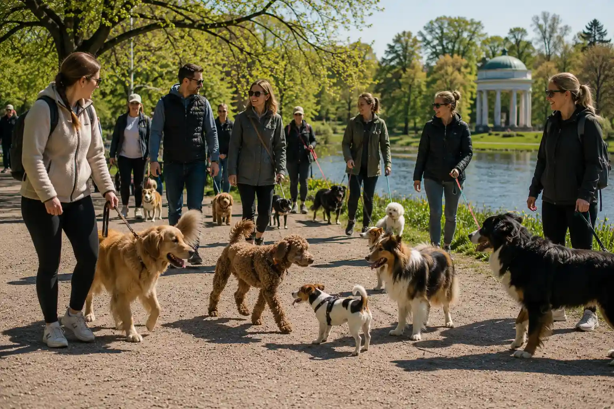

Promenadgrupp
Promenadgrupp i Hagaparken
Följ med på en lugn och social promenad där både hundar och hundägare får möjlighet att träffas, umgås och upptäcka nya promenadstråk tillsammans.

Praktisk information
- Plats
- Hagaparken
- Tid
- Söndagar kl. 10.00
- Längd
- Cirka 60 minuter
- Pris
- Kostnadsfritt
- Passar för
- Hundägare som vill träffa andra och promenera i lugnt tempo
Om aktiviteten
Promenadgruppen passar dig som vill göra hundpromenaden mer social och samtidigt ge din hund möjlighet att vistas nära andra hundar på ett lugnt och kontrollerat sätt. Aktiviteten är tänkt att vara enkel att delta i och kräver inga särskilda förkunskaper.
Under promenaden går gruppen i ett lugnt tempo genom Hagaparken. Det finns tid för samtal, erfarenhetsutbyte och kortare pauser. På så sätt blir promenaden både en vardagsaktivitet och en möjlighet att skapa nya kontakter med andra hundägare.
Aktiviteten fungerar bra för hundägare som vill ha mer inspiration i vardagen, hitta nya promenadstråk eller låta hunden träna på att vistas i närheten av andra hundar utan stress.
Att tänka på
- Ta gärna med vatten till både dig och hunden.
- Använd vanligt koppel under hela promenaden.
- Kom några minuter innan start så gruppen kan samlas i lugn och ro.
- Visa hänsyn till andra deltagare, hundar och personer i parken.